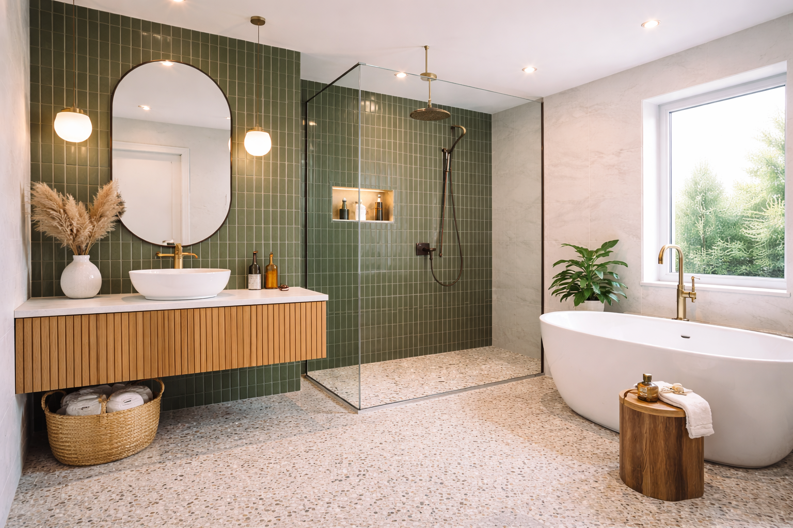
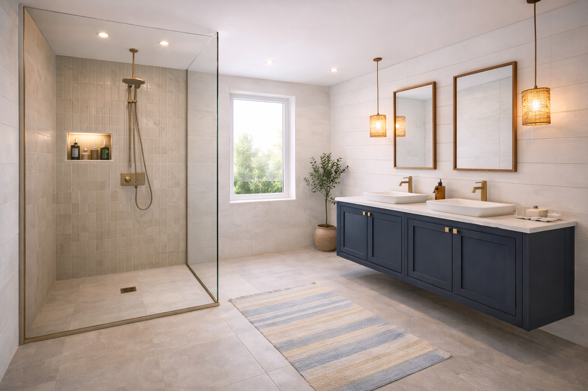
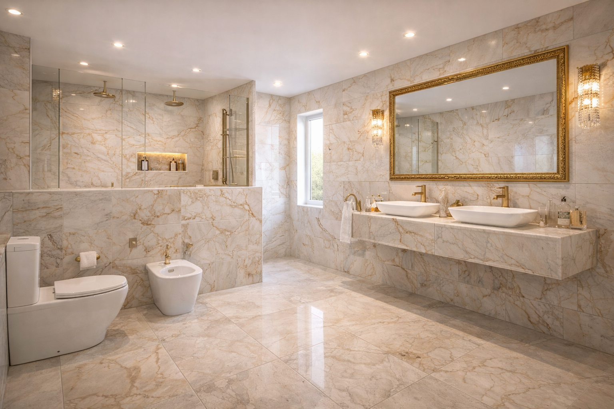
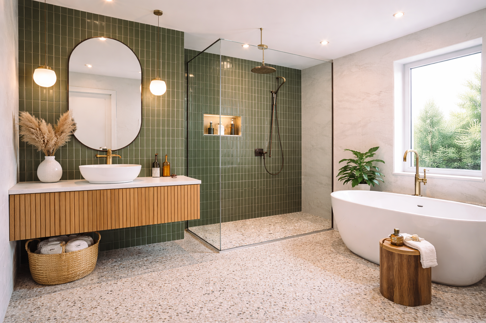
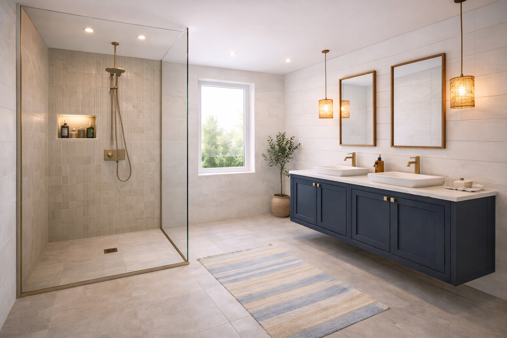
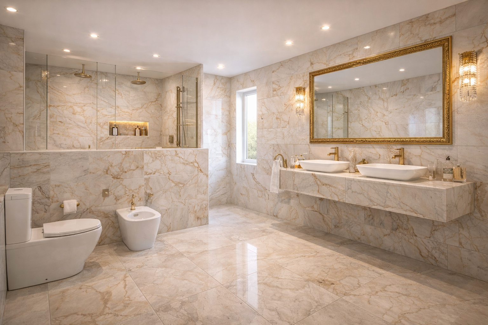
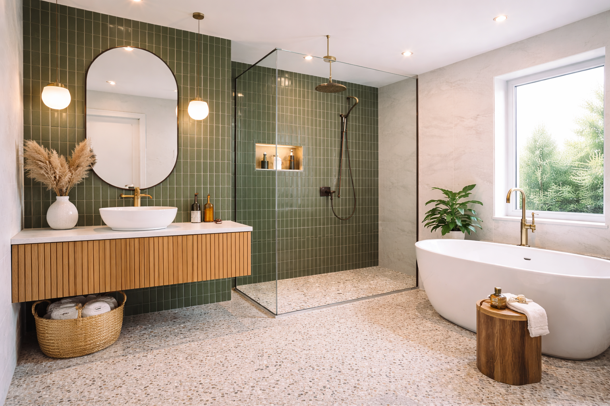
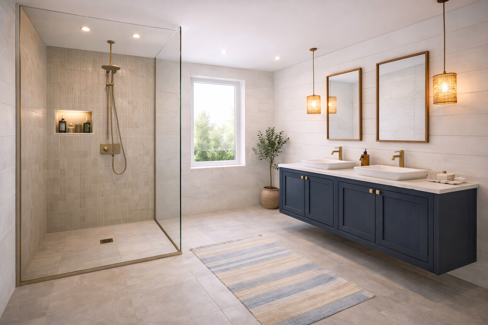
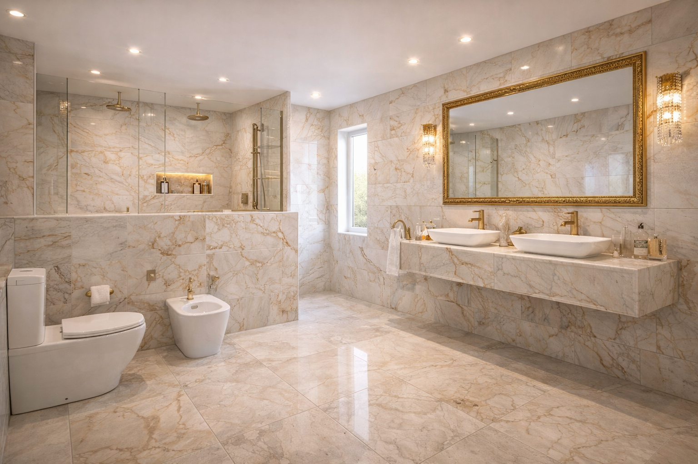

Unsere Arbeiten
 





Wir sind Ihr zuverlässiger Partner für professionelle Fliesenarbeiten. Mit langjähriger Erfahrung bieten wir präzise und hochwertige Verlegung von Wand- und Bodenfliesen für Privat- und Gewerbekunden. Qualität, Sauberkeit und termingerechte Ausführung stehen bei uns an erster Stelle.



📍 D-74348 Lauffen am Neckar · Mühltorstraße 33